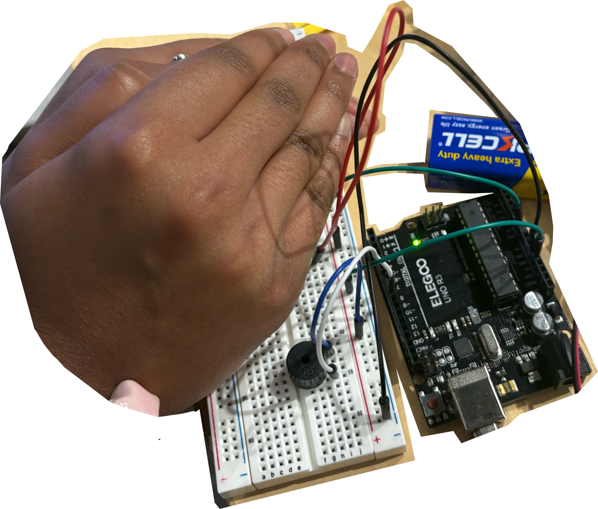
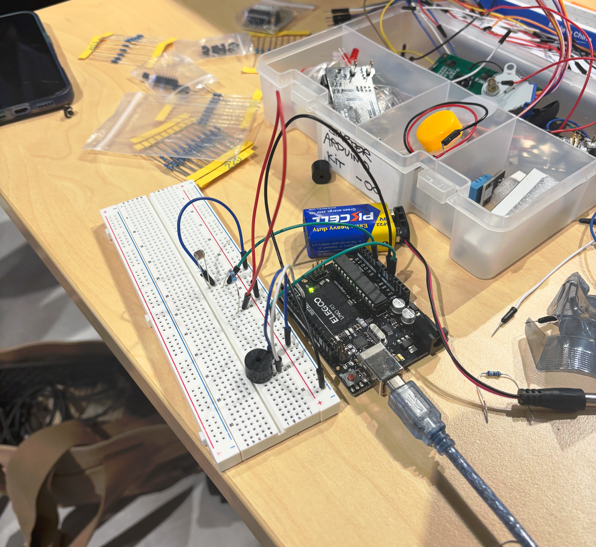

back
Further delving into Arduino experiments, we built a small circut using a light sensor and Piezo Buzzer to create a rough sort of theramin. During the setup of this 'screaming machine', my group went through a bit of trial-and-error getting the right resistor and voltage setup, as for some reason our kit wouldn't work with the template resistor strengths. This was pretty interesting to work out, as I feel that I got to understand resistors and their strenghts alot more, and possible ways to troubleshoot further audino projects. Our outcome thermain was quite quiet at points, which we discovered was due to the level of voltage we were supplying (3v), but didn't work at all on (5v). I think our approach to voltage could have been caused by the resistors later in the circut, but eventually we got it to work.
Using the piezo buzzer was interesting in this exercise, as it really made the outcome sound like a little screaming bug, which did impact the overall appearance of the interaction - It felt like I was intimidating a microscopic creature. Cool effect, but It was quite grating after a while. Thinking about possible extensions of this activity, I'm interested in the granularity of data the sensor can emit to the arduino board, and other effects that could be created with the audio output (Some of my ideas below).
Could this be used in an activity to get users to cup their hands and put their ear up to an object, to get quiet music to start playing?
Change the output to another stimuli? like movement of another object (I could imagine a robotic plant wilting when you cover it's light sensor)
Combine a light sensor with another sensor (Supersonic like the next task we did in this workshop) and add a second dimension to change pitch with volume? bigger objects covering the light sensor could make the speaker emit a lower pitch etc.
